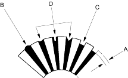
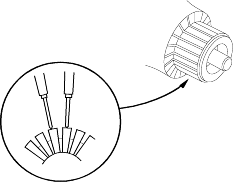
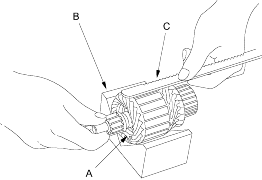
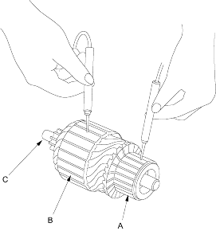

- Check the mica depth (A). If the mica is too high (B), undercut the mica with a hacksaw blade to the proper depth. Cut away all the mica (C) between the commutator segments. The undercut should not be too shallow, too narrow, or V-shaped (D).
Commutator Mica Depth
Standard (New):
0.45 - 0.75 mm (0.018 - 0.030 in.)
Service Limit:
0.2 mm (0.008 in.)

- Check for continuity between the segments of the commutator. If an open circuit exists between any segments, replace the armature.

- Place the armature (A) on an armature tester (B). Hold a hacksaw blade (C) on the armature core. If the blade is attracted to the core or vibrates while the core is turned, the armature is shorted. Replace the armature.

- Check with an ohmmeter that no continuity exists between the commutator (A) and armature coil core (B) and between the commutator and armature shaft (C). If continuity exists, replace the armature.
